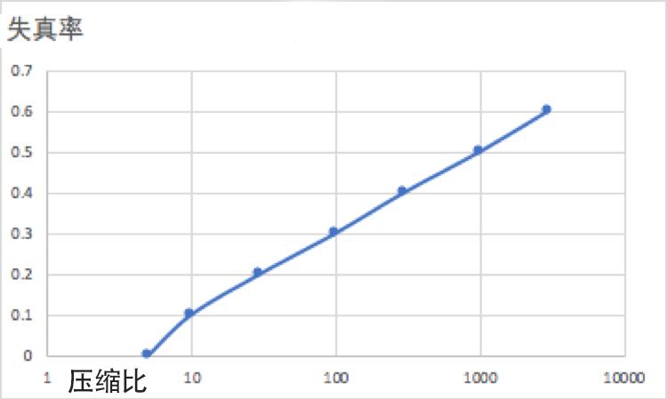

你好，欢迎来到我的《信息论40讲》。
上一讲，我们谈论图片和视频是如何压缩的，介绍了它们背后的两个原理：信息的等价性转换，以及利用信息的前后相关性，找出差异，对增量编码。用这些方法，就可以压缩信息。
但是大家都有一个疑问，那就是，我压缩过的图片，恢复回来似乎没有原图清晰了，这是怎么回事？信息的压缩是否都会让一部分信息丢失掉？
这一讲我会告诉你，信息压缩是要考虑失真率的，而这种取舍平衡的原则，其实是我们都应该学习和了解的。
我们在前面讲了香农第一定律。香农指出，任何编码的长度都不会小于信息熵，也就是通常会大于等于信息熵，当然最理想的就是能等于。
如果编码长度太短，小于信息熵，就会出现损失信息的现象。
因此，信息熵是告诉信息处理的人，做事情的边界，就如同不能试图逾越热力学第二定律发明永动机一样，大家在压缩信息时，如果想要无损，就不能逾越香农给的这个边界。
也就是说，如果一张图片里面有10K的信息，你再怎么压，也不会比它小，否则就会损失信息。
理解了这一点以后，我们就知道无论是语音，还是图像、视频，都有两类的压缩方式，一类就是无损压缩。比如我们昨天说的通过傅里叶变换和离散余弦变换将音频和图像信息变成频率信息，再用类似哈夫曼编码进行压缩，这是不会丢失信息的。
另一类是要丢失一部分信息的，也被称为有损压缩。
比如一幅图经过无损压缩已经被压到10K了，你还想压到1K，那就需要有所损失了。因为在很多场合下，有损的压缩还是必要的。
事实上我们今天对于音频、图像和视频的压缩，绝大多数情况都是有损的压缩。而有损压缩最关键的是要清楚如何保证因为压缩而丢失的信息不影响我们对信息的理解呢？这就需要平衡压缩比和信息失真度之间的关系。
所谓失真度，其实通俗来说，就是压缩前、压缩后的两串信息的差的平方。
也就是说，如果信息没有任何失真，失真率是0。如果信息完全消失了，失真率是100%。有了失真率的概念，我们就可以来讨论有损失的信息压缩了。
其实我们生活中大量应用到的都是有损压缩，只不过我们感受不到，这就说明压缩很好地考虑到了失真率。
比如一个数码相机拍的照片，原图有18MB的大小。通常JPEG算法会将它压缩到3～5MB，这其实会有信息损失，但是肉眼根本看不出的。
你将它印成10x8寸的照片，只要你拍得清晰，每一个像素基本上都是清晰的。但是如果你将它压缩到500K，再印成一样大小的照片，就能看出一个个小色块了，而且一些细节也消失了。
同样的道理，如果我们将原始的语音压缩10倍，或许有失真，但是语音本身肯定是清晰的，还能听出是谁的声音，但是如果压缩50倍，语音内容可以辨认，但是却听不出是谁的声音了。
那么到底该压缩多少倍呢？接下来我就要为你介绍，压缩比和失真率平衡原则。
在进行信息压缩之前，明确压缩的目的非常重要，你印一张证件照，图片压缩到100K也是可以接受的，你要做一张会展的海报，那就还是用原始文件比较好，不要做有损压缩了。
通常，压缩比和失真率的关系会是下面这样一条曲线：

很多时候，我们都是在接受了某个失真度的情况下（也就是在上图中横着切一刀），然后再去尽可能找到好的压缩比。
世界上很多时候没有最好的技术方案，只能根据场景找到合适的，因此做事的目的性很重要。这是第一个原则。
我们还知道信息的作用是消除不确定性，那么反过来，丢失了一部分信息，一定会增加不确定性。用的信息少，永远不可能做得和原来一样好，这是第二个原则，大家一定要记清楚。
不久前，有一个YC的创业团队，介绍他们如何只利用别人1/1000的数据就可以进行深度学习的训练。有些投资人问我是否值得投资。我就对他们讲，丢失了1000倍的信息，不要指望做出来的东西和以前一样好。
至于如何平衡数据量和效果的关系，就看矛盾的主要方面在哪一方了。如果说过去没有数据，牺牲掉一点性能，也就罢了。
今天世界上最不缺的就是数据，在最近的三年里，全世界产生的数据，比三年前到有文字以来人类产生的数据的总和还多。在这种情况下，节省数据是一条错误的努力方向，这家公司不值得投资。
除了要考虑目的，考虑到信息数量之外，第三个原则是，在压缩信息时，有时要看应用场景。
还是以语音压缩为例，在语音通话时，牺牲一定的讲话人的口音，问题不大，因为它的目的是传递话音中的信息。
但是，在进行声纹识别时，情况就正好相反，那个人说了一句什么话不重要，重要的是知道他是谁。
因此在后一种应用中，需要保留的是说话人本身的信息，反倒是他说的内容无关紧要。也正是因为应用的场景不同，才有了各种压缩算法。
接下来大家可能会有一个疑问，那么高比例的信息压缩到底是压缩掉了什么信息？
简单地讲，就是压缩掉了高频信息。进一步说，人通常能够听到20赫兹到2万赫兹的声音，但是人发音的范围只有300赫兹到4000赫兹左右，因此任何高于4000赫兹的语音信号，就被过滤了。
虽然据说世界上音调最高的女性叫起来能到1.7万赫兹，这已经远远超过了小提琴的最高音了，但是对不起，为了压缩信息，我们不保留。今天的语音通信就是这么实现的。
对于图像也是如此，你可能注意到这样一个现象，如果你以蓝天为背景拍了一张照片，照片上有只很小的鸟，你如果用JPEG算法进行图像压缩，小鸟可能就被过滤掉了，而且蓝天的细节就没有了。这就是因为有损的图像压缩算法都是先过滤高频信息的。
我们在生活中有句谚语，叫做“枪打出头鸟”，其实在信息压缩中，总是遵守这个原则的，任何与众不同的东西，总是先被压缩掉，因为对那些与众不同的东西做编码，占用的空间相对太多。
信息压缩的原理，不仅在计算机存储、通信和信息处理中经常用到，还被用于了生物、金融等很多领域。
根据华大基因创始人杨焕明教授的说法，如果把人以及他体内细菌（量是相当大的）的基因都测序，然后存起来，每个人要超过1PB的存储空间，也就是1000个1T的硬盘，这显然是一件成本极高的事情。
2012年，约翰·霍普金斯大学的科学家们发表了一种遗传压缩算法，在不丢失任何信息的情况下，压缩比达到了1000倍。这件事对于普及基因测序很有意义。
约翰·霍普金斯大学的科学家们是怎么做的呢？简单地讲，他们的方法和视频压缩的方法很相似——考虑到人的很多基因是相同的， 只需要存储有差异的基因即可。
信息的压缩分为有损的和无损的两种。对于无损的压缩，原先的信息能够完全复原，但是通常压缩比不会太高，因为它存在一个极限，就是香农第一定律给的信息熵的极限。对于有损的压缩，信息复原后，会出现一定程度的失真。
通常失真率和压缩比直接相关，压缩比越大，失真率越高。采用什么样的压缩方法，压缩到何种程度，通常要看具体的应用场景。在信息处理这个领域，常常不存在所谓的标准答案和最佳答案，只有针对某个场景的好的答案，而一切都是妥协的结果。
信息压缩看似是信息处理专业的问题，但是它的思想可以用到很多地方。我们有时强调要把知识学通，就是这个道理。
思考题：我们身边有很多朋友，都是无损音乐、无损电影的爱好者，从听觉和观感上说说真的有那么大的区别吗？有没有其他影响因素呢？
预告：下一讲，我们学习一个面对多种信息时的取舍之道。我们下一讲再见。